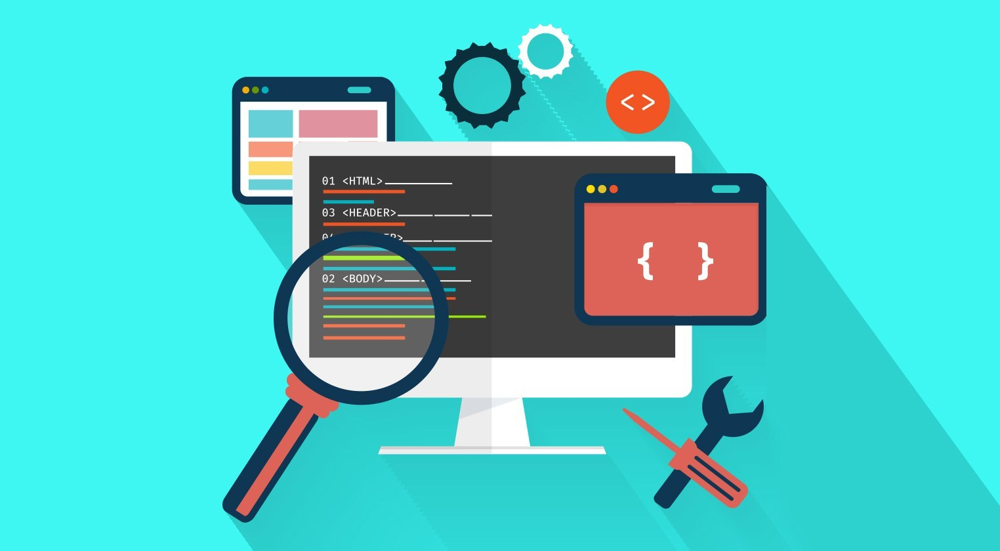
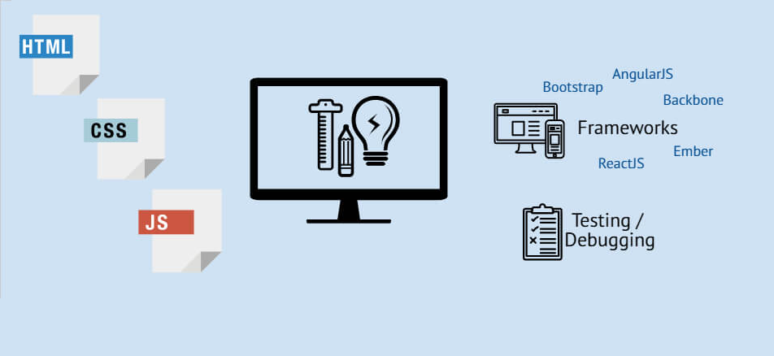

Sign Up
Create an account:
როგორ გავხდეთ Front-End დეველოპერი?

ვებ-დეველოპმენტმა, უკანასკნელ წლებში, დიდი ყურადღება მიიქცია,
ინტერნეტმომხმარებელთა რიცხვი ყოველწლიურად იმატებს, ყველაფერი კი, იქიდან
იწყება, რომ ვიღაც ვებ საიტს ქმნის, მის ვიზუალურ მხარეს, ფუნქციონალს, სწრაფ
რეაგირებას, უსაფრთხოებასა და ეფექტურ მუშაობას უზრუნველყოფს და მზა პროდუქტს
მომხმარებლებს წარუდგენს. ფრონტ-ენდ დეველოპმენტი იმ ყველაფერს განკარგავს,
რასაც საიტსა თუ აპლიკაციაში შესული მომხმარებელი ხედავს. ფრონტ-ენდ
დეველოპერები სწორედ საიტებისა და აპლიკაციების ინტერფეისზე, ე.წ. “კლიენტის
მხარეზე” არიან პასუხისმგებელნი; მათი საქმიანობის ნაწილია როგორც კოდის
ანალიზი და დიზაინი, ისე დებაგინგი. საიტებისა და აპლიკაციების ინტერფეისებზე
ზრუნვა ფრონტ-ენდ დეველოპერების საქმიანობის მხოლოდ ერთი ნაწილია; გარდა
ამისა, ფრონტ-ენდი იმასაც ამოწმებს, რამდენად ხელმისაწვდომია იგივე საიტები
და აპლიკაციები სხვადასხვა გაჯეტზე – სმარტფონზე, ტაბლეტზე, მაკბუკსა თუ
ანდროიდზე.
რა გვჭირდება მიზნის მისაღწევად?

ახლა, მოდით, გადავიდეთ იმ უნარებსა და მიდგომებზე, რომლებიც უნდა დაიცვათ,
რომ გახდეთ გამოცდილი Front-End დეველოპერი.
ასევე შეგიძლიათ გამოიყენოთ ჩვენი
სასწავლო მასალები
My Fitness Route
1.HTML, CSS და JavaScript
იმისათვის, რომ კოდირებული მონაცემები მომხმარებლისთვის ადვილად აღსაქმელ
ინტერფეისად აქციონ, ფრონტ-ენდ დეველოპერები რამდენიმე ვებ-ტექნოლოგიას
იყენებენ, მათ შორის:
HyperText Markup Language (HTML), Cascading Style Sheets (CSS) და
JavaScript. HTML საიტების შენების პროცესში სამშენებლო აგურად ან
ბლოკად შეგვიძლია წარმოვიდგინოთ. ამ პროგრამული ენის მეშვეობით დეველოპერი
აღწერს და ნიშნავს კონტენტს, რომელსაც შედეგად ბრაუზერი სწორად აღიქვამს.
Cascading Style Sheets (CSS) უფრო მეტად საიტის სტილისა და სტრუქტურის
მართვის ინსტრუქციას წააგავს, ვიდრე პროგრამირების ენას. სწორედ CSS-ი
ეხმარება დეველოპერებს ვებ საიტისა თუ აპლიკაციის ფორმატირებაში,
პრეზენტირებასა და განლაგების მართვაში.
JavaScript-ი ვებ პროგრამირების ჰორიზონტზე 90-იანების მეორე ნახევარში
გამოჩნდა, თუმცა, დღეს რთულია საიტების მის გარეშე წარმოდგენა. ჯავასკრიპტი
დეველოპერებს საშუალებას აძლევს, საიტები ინტერაქციული გახადონ. ამ
პროგრამული ენის მეშვეობით, მომხმარებლის ქმედებიდან გამომდინარე საიტის
კონტენტის ცვლა ხდება შესაძლებელი;
2.Front-End Frameworks
როგორც კი დაასრულებთ HTML, CSS და JavaScript-ს შესწავლას, შემდეგ თქვენ
უნდა ისწავლოთ რამდენიმე Front-End Frameworks თქვენი მოთხოვნილების
და საჭიროების მიხედვით. ზოგადად, Front-End Framework არის უკვე დაწერილი
კოდების ბიბლიოთეკები და ეს ფრეიმვორქები აადვილებს და ეფექტურს Front-End-ს
სხვადასხვა ფუნქციების გამო. არსებობს მრავალი ცნობილი Framework, როგორიცაა
Angular, React, Vue და ა.შ.
|
JavaScript Popular Frameworks |

|
AngularJS |

|
ReactJS |

|
Vue.js |

|
jQuery |

|
Ember.js |

|
Bootstrap |
3.საჭირო ტექნოლოგიებისა და ინსტრუმენტების შესწავლა
მნიშვნელოვანია Version Control System-ის საფუძვლიანი ცოდნა,რომელიც
საშუალებას გაძლევთ თვალყური ადევნოთ და აკონტროლოთ კოდის წერის დროს
შეტანილი ცვლილებები.ამ მხრივ ერთ-ერთ ყველაზე პოპულარულ ვერსიებია
GitHub, Mercurial, Beanstalk და ა.შ. იმ ტექნოლოგიების
ცოდნა,როგორიცაა
Developer Tools,Testing & Debugging, CSS Preprocessing, Web Performance
metrics
და ა.შ დაგეხმარებათ გახდეთ კომპეტენტური Front-End დეველოპერი.
4.პროექტებზე მუშაობა
Education without application is just entertainment! სწორედ ამიტომ
უმნიშვნელოვანესია მიღებული ცოდნის პრაქტიკულ სამყაროში გამოყენება და
განვითარება.ამისთვის შესაძლებელია დაიწყოთ მუშაობა ისეთი მცირე პროექტების
შექმნით,როგორიცაა Quiz Game, To-Do List და ა.შ. და შემდეგ
გადახვიდეთ პროექტებზე, როგორიცაა
Audio Player, Chatting Platform და სხვა. ეს მოგცემთ ძალიან საჭირო
პრაქტიკულ გამოცდილებას. პროექტების შექმნისას შეიძლება აღმოჩნდეთ სხვადასხვა
ახალი კონცეფციების წინაშე, რომლებიც შეიძლება ვერ შეიისწავლოთ რომელიმე
წიგნიდან ან სახელმძღვანელოდან,ასევე წააწყდეთ გარკვეულ პრობლემებს,რომელთა
აღმოსაფხვრელად არსებული გზების ძიება კიდევ უფრო განამტკიცებს თქვენს
თეორიულ ცოდნას.
ასევე გირჩევთ, open-source პროექტებს, რადგან ეს არა მხოლოდ გაზრდის
თქვენს უნარებს, არამედ აამაღლებს თქვენს სანდოობას და რეპუტაციას, რაც
საბოლოოდ დაგეხმარებათ მიიღოთ ღირებული კარიერული შესაძლებლობები.
5.შექმენით პორტფოლიო
ეს არის ერთ-ერთი ყველაზე მნიშვნელოვანი ასპექტი, თუ თქვენ მოუთმენლად ელით
თქვენი კარიერის დაწყებას, როგორც Frontend Developer. მიუხედავად იმისა,
ეძებთ სამუშაოს ორგანიზაციაში ან გეგმავთ რაიმეს დამოუკიდებლად დაწყებას,
თქვენ უნდა აჩვენოთ თქვენი ნამუშევარები დ დამქირავებლებს. უფრო მეტიც,
განსაკუთრებით დამწყებთათვის, შეგიძლიათ დაიწყოთ თქვენთვის მარტივი სტატიკური
ვებსაიტის შექმნით, სადაც შეგიძლიათ აჩვენოთ თქვენი დასრულებული პროექტები იმ
ინსტრუმენტებთან და ტექნოლოგიებთან ერთად, რომლებზეც მუშაობთ და თქვენი
საკონტაქტო ინფორმაცია. კარგად შემუშავებული პორტფოლიო აუცილებლად
დაგეხმარებათ აჩვენოთ თქვენი უნარები უკეთესად, რაც მოგცემთ უპირატესობას.
6.შეუერთდით Front-End დეველოპერების საზოგადოებას
და ბოლოს,თქვენ უნდა შეუერთდეთ Front-End Development მოღვაწე ადამიანებს,
რომლებიც დაგეხმარებიან გახდეთ გამოცდილი Front-End დეველოპერი. მაგალითად,
ამ ადამიანებს შეუძლიათ მოგაწოდონ სასწავლო რესურსები, გაცნობონ ინდუსტრიის
უახლესი ტენდენციების შესახებ, შეუძლიათ უპასუხონ თქვენს შეკითხვებს და რაც
მთავარია, მოგაწოდონ კარიერული შესაძლებლობები.